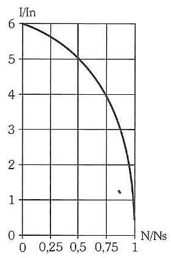
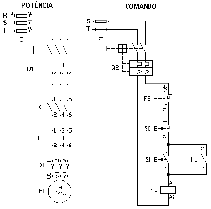
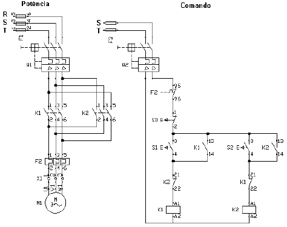
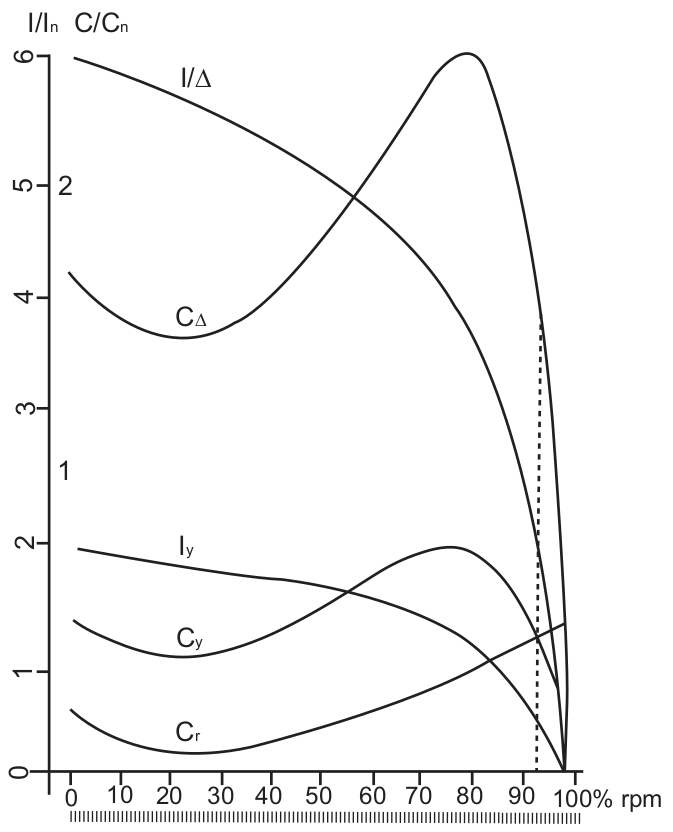
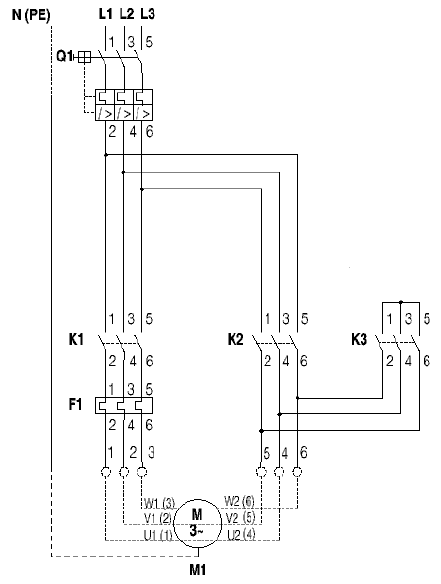
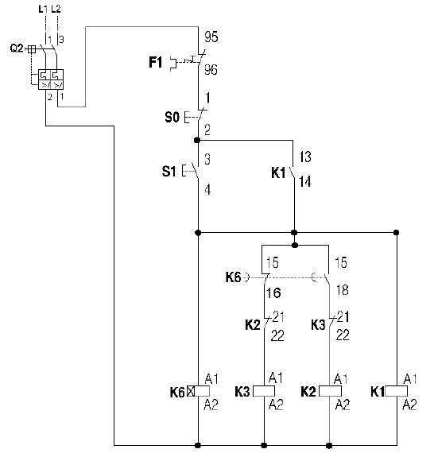
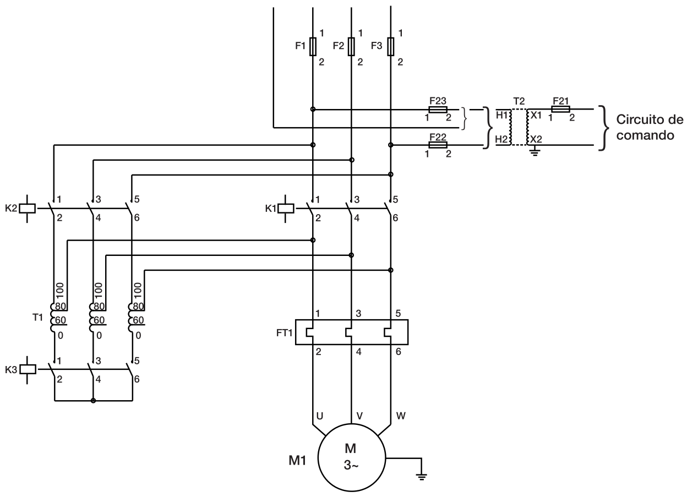
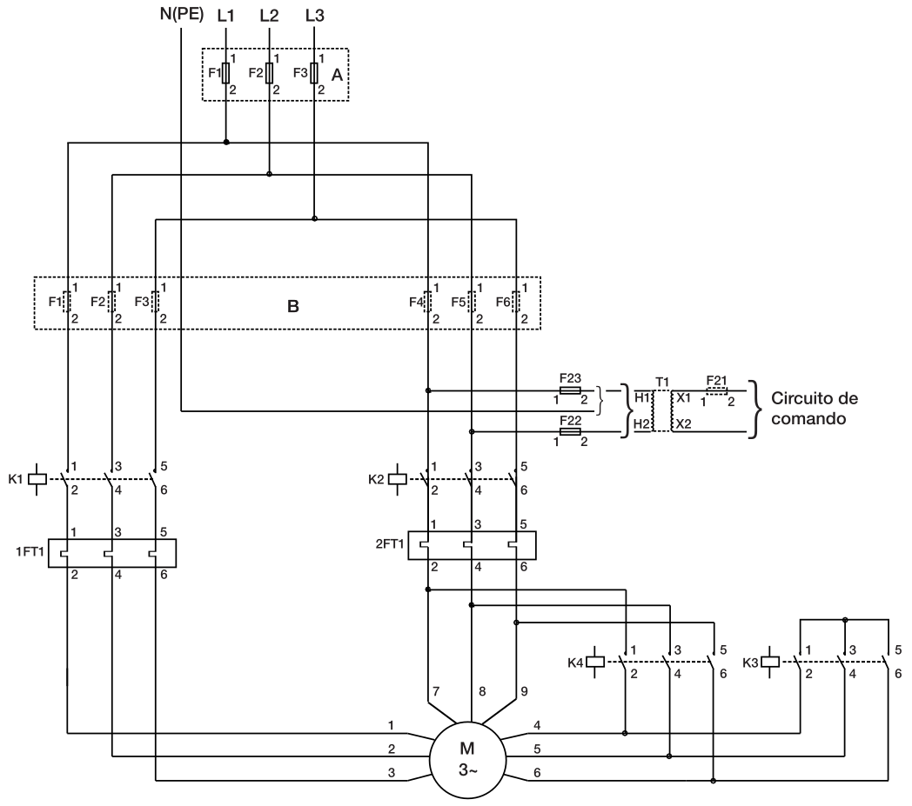
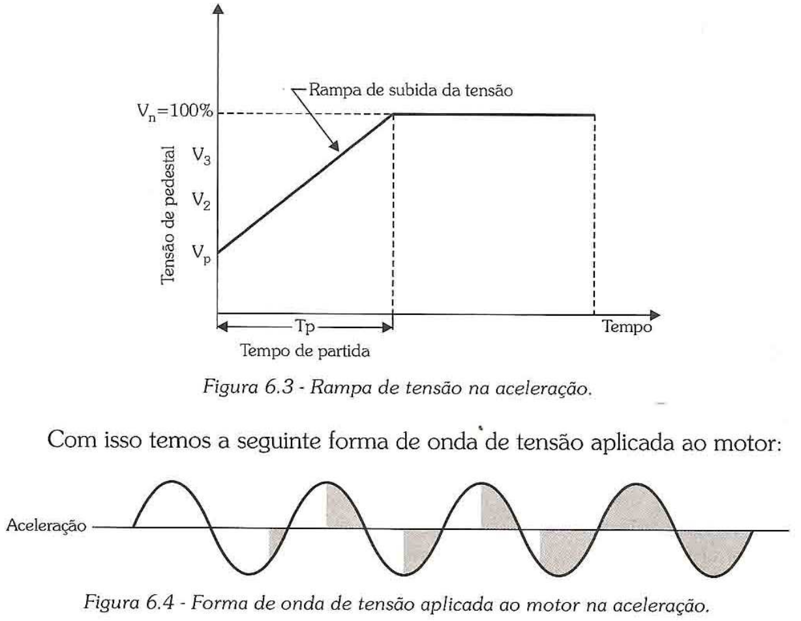
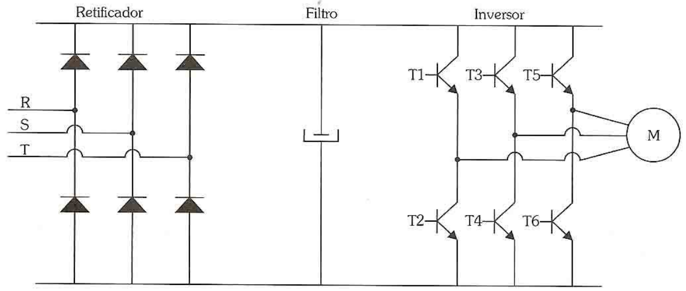

Código
V fase (ligacao estrela) = 127.0 V
Razao em relacao a tensao em triangulo = 57.7%Apostila de Comandos Elétricos
Partida de Motores
UFMG - DEE
Tem alto conjugado de partida ao custo de elevada corrente até que se atinja o ponto de operação nominal — o motor é ligado diretamente à tensão de linha, sem redução.

Fig. 1: Curva de torque e corrente na partida direta.
Usa o circuito de selo para manter o motor acionado sem a necessidade de segurar o botão de partida:

Fig. 2: Esquemático de partida direta (potência e comando).
Componentes: 1 disjuntor tripolar (Q1); 1 disjuntor bipolar (Q2); 3 fusíveis (F1); 1 relé térmico (F2); 2 fusíveis (F3); 1 contator (K1); 1 botoeira NF (S0); 1 botoeira NA (S1); 1 motor trifásico (M1).
Usa o intertravamento para impedir que os dois contatores (sentido horário/anti-horário) fechem ao mesmo tempo — o que causaria curto-circuito entre fases:

Fig. 3: Esquemático de partida direta com reversão.
Componentes: os mesmos da partida direta, mas com 2 contatores (K1 e K2) e 2 botoeiras NA (S1 e S2) — uma para cada sentido de giro.
Requer motor com os 6 terminais acessíveis e dupla tensão (220/380 V, 380/660 V ou 440/760 V), partindo a vazio ou com carga leve.
Exemplo: rede de 220 V, motor 220/380 V. Em triângulo, a tensão de fase é 220 V; em estrela, a tensão de fase cai para \(220/\sqrt{3} \approx 127\) V (≈58% da tensão em triângulo):
V fase (ligacao estrela) = 127.0 V
Razao em relacao a tensao em triangulo = 57.7%Como \(T \propto V^2\) (mesma física da ?@eq-torqueMedioReduzida do deck de Seleção da Máquina Elétrica), a redução de tensão para \(1/\sqrt{3}\) implica:
\[ \dfrac{T_{\rm{estrela}}}{T_{\rm{triangulo}}} = \dfrac{I_{\rm{estrela}}}{I_{\rm{triangulo}}} = \left(\dfrac{1}{\sqrt{3}}\right)^{2} = \dfrac{1}{3} \]

razao V (estrela/triangulo) = 0.5774
razao T e I (estrela/triangulo) = 0.3333 (= 1/3)Se o motor for acionado a vazio, essa redução de torque de partida não é problemática — e ainda há o benefício de reduzir a corrente nos enrolamentos e na rede. Após o motor atingir cerca de 95% da velocidade nominal, a conexão comuta de estrela para triângulo.


O dimensionamento dos fusíveis segue os mesmos 3 critérios da partida direta — mas, no critério 1, a corrente de partida do estrela-triângulo é \(1/3\) da corrente de partida em partida direta (mesma razão do slide anterior).
Um autotransformador reduz a tensão aplicada ao motor por um fator \(K\) (tipicamente \(65\%\) ou \(80\%\)) durante a partida:

Fig. 7: Esquemático da chave compensadora.
Diferente da estrela-triângulo, aqui a redução de corrente de linha ganha um fator extra da relação de transformação — por isso a corrente de partida cai com \(K^2\), e não apenas com \(K\).
Para um tap \(K = 65\%\) (redução usual de catálogo):
K = 0.65 # tap do autotransformador
reducaoCorrente = K^2
reducaoTorque = K^2 # mesma fisica: T ~ V^2
println("K = ", K)
println("Corrente de partida cai para ", round(reducaoCorrente*100, digits=1), "% da partida direta")
println("Torque de partida cai para ", round(reducaoTorque*100, digits=1), "% da partida direta")K = 0.65
Corrente de partida cai para 42.3% da partida direta
Torque de partida cai para 42.3% da partida diretaO dimensionamento dos fusíveis segue os mesmos 3 critérios de sempre, mas no critério 1 a corrente de partida é proporcional a \(K^2\), e não a \(1/3\) como no estrela-triângulo — a chave compensadora permite escolher o tap \(K\) (65%, 80%, etc.) e assim ajustar a redução de torque/corrente à necessidade específica da carga, algo que a estrela-triângulo (com razão fixa de \(1/\sqrt{3}\)) não permite.
Requer motor com duas tensões nominais, a maior sendo o dobro da menor (mais comum: 220/440 V). Parte-se na configuração série (440 V) e comuta-se para paralelo (220 V) após atingir a rotação nominal:

Fig. 8: Esquemático da partida série-paralelo.
A tensão de fase em série (440 V) é o dobro da tensão de fase em paralelo (220 V) — ou seja, partir em série corresponde a uma razão de tensão de \(1/2\) em relação à ligação paralelo:
razao de tensao (paralelo/serie) = 0.5
reducao de corrente/torque de partida = 0.25 (= 1/4)Corrente e torque de partida caem para 1/4 do valor da partida direta — redução maior que a da estrela-triângulo (1/3), por isso o motor precisa partir praticamente sem carga nessa configuração.
Controla eletronicamente a tensão aplicada ao motor durante a partida (via tiristores/SCRs), elevando-a gradualmente em vez de aplicar o valor nominal em degrau:

Fig. 9: Soft-starter e curva de partida suave.
Permite ajustar a rampa de aceleração e limitar a corrente de partida de forma contínua — muito mais flexível que os taps fixos da chave compensadora.
Controla tanto a tensão quanto a frequência aplicadas ao motor — não se limita à partida, permite variação contínua de velocidade em toda a faixa de operação:

Como já visto no deck de Seleção da Máquina Elétrica, para manter o fluxo constante e evitar saturação/sobrecorrente, a tensão é reduzida linearmente com a frequência abaixo do valor nominal (\(V/f\) constante).
TOLEDO JÚNIOR, J. A. Apostila de Comandos Elétricos (material complementar em formato .odt, não convertido para LaTeX no material original).
Por que a partida estrela-triângulo só é recomendada para motores acionados a vazio ou com carga leve?
Porque o torque de partida cai para \(1/3\) do valor da partida direta (mesma razão da redução de corrente, já que \(T \propto V^2\) e a tensão de fase cai para \(1/\sqrt{3}\)). Se a carga precisar de mais torque de partida do que esse \(1/3\) oferece, o motor não consegue sair do repouso na ligação estrela.
Uma chave compensadora tem tap \(K=80\%\). Calcule a redução de corrente e torque de partida em relação à partida direta.
Qual a principal diferença entre a redução de corrente na chave compensadora (\(K^2\)) e na chave estrela-triângulo (\(1/3\) fixo)?
Na estrela-triângulo, a razão de redução é fixa em \(1/3\) (definida pela própria topologia estrela/triângulo, sem parâmetro ajustável). Na chave compensadora, o tap \(K\) do autotransformador é escolhido pelo projetista (tipicamente 65% ou 80%) — permitindo ajustar a redução de corrente/torque à necessidade específica da carga, ao custo de um equipamento mais caro (o autotransformador) que a simples chave estrela-triângulo.
Por que a partida série-paralelo exige que o motor parta praticamente sem carga?
Porque a redução de torque de partida é de \(1/4\) (mais severa que a da estrela-triângulo, que é \(1/3\)) — sobra pouco torque disponível para vencer qualquer torque resistente da carga, então essa configuração só funciona bem quando a carga oferece pouca ou nenhuma resistência no instante da partida.
Qual a vantagem do inversor de frequência sobre o soft-starter, além da própria partida do motor?
O soft-starter só controla a tensão e apenas durante a partida (ou parada) — depois de atingida a velocidade nominal, ele é tipicamente contornado (bypass) e o motor opera ligado diretamente à rede, em velocidade fixa. Já o inversor de frequência controla tensão e frequência continuamente, permitindo operar o motor em qualquer velocidade dentro da faixa do acionamento, não só durante a partida.
UFMG | ELE618 - Sistemas Elétricos Industriais